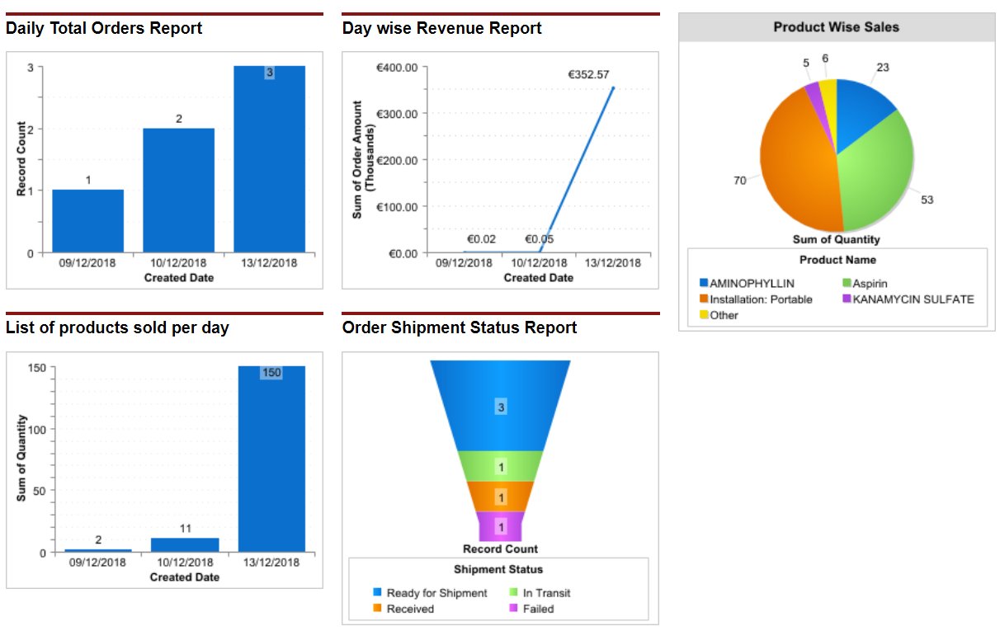

Problem
Field-force operations need structured customer, order, and approval workflows so teams can coordinate work without losing business context.
CRM | Salesforce | Business Workflows
A Strategic ICT and eBusiness implementation project translating a field-force case study into CRM workflows, dashboards, approvals, and operational process design.
Field-force operations need structured customer, order, and approval workflows so teams can coordinate work without losing business context.
The solution used Salesforce Communities pages, built-in and custom objects, order-processing workflows, approval flows, dashboards, and focused Apex code.
Business requirements were translated into user-facing CRM flows, management views, and operational dashboards that made case progress easier to inspect.
The final implementation demonstrated how platform configuration and small custom code extensions can turn a business case into a working enterprise workflow.

This project shows the product side of engineering: understanding business workflows, modeling data and approvals, and building systems that make operational state visible to the people responsible for acting on it.
Open legacy project archive